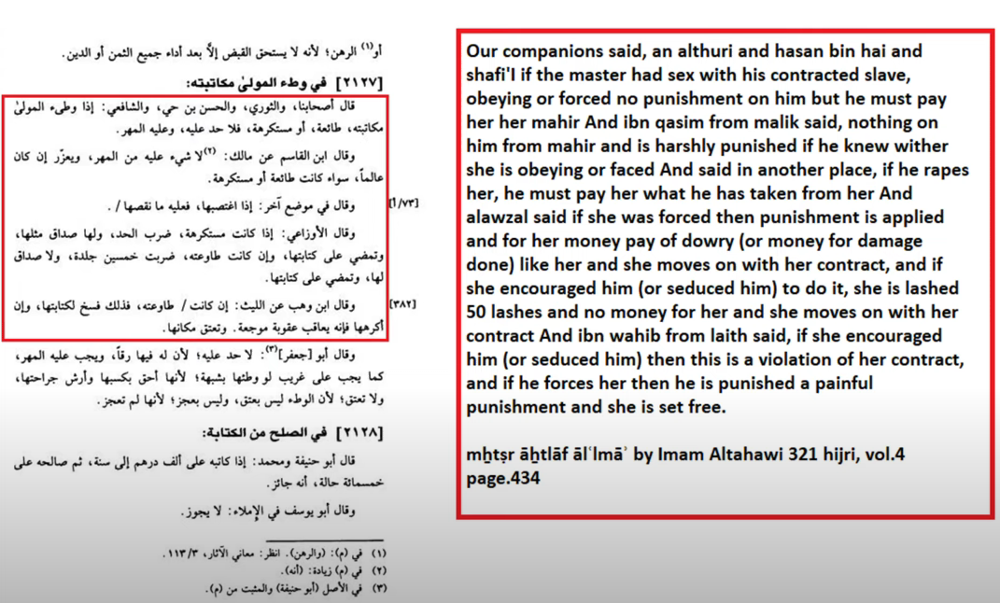
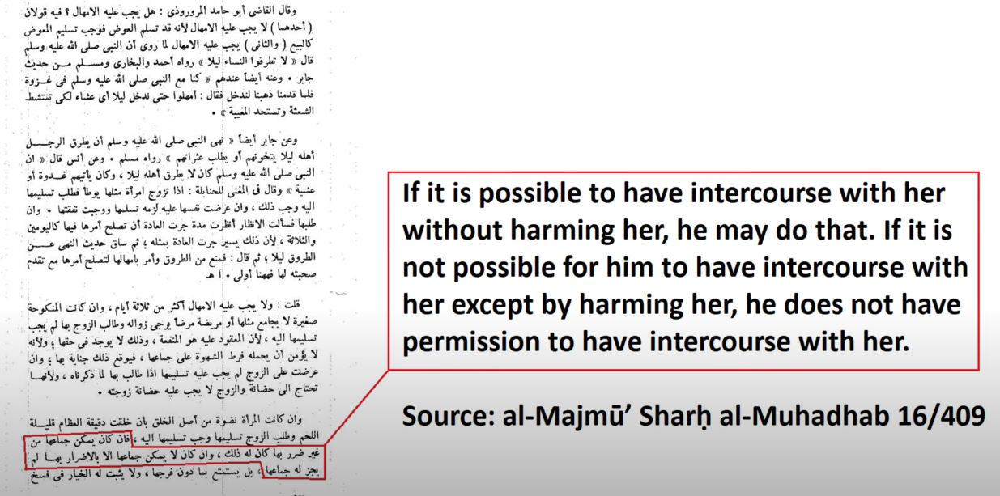
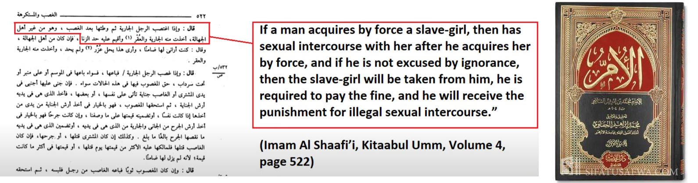
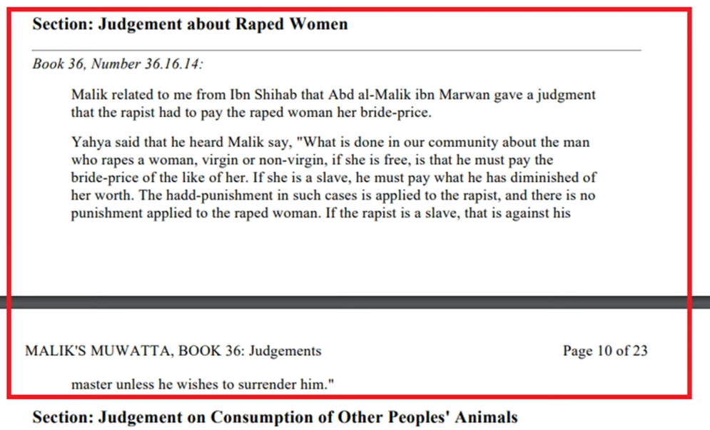
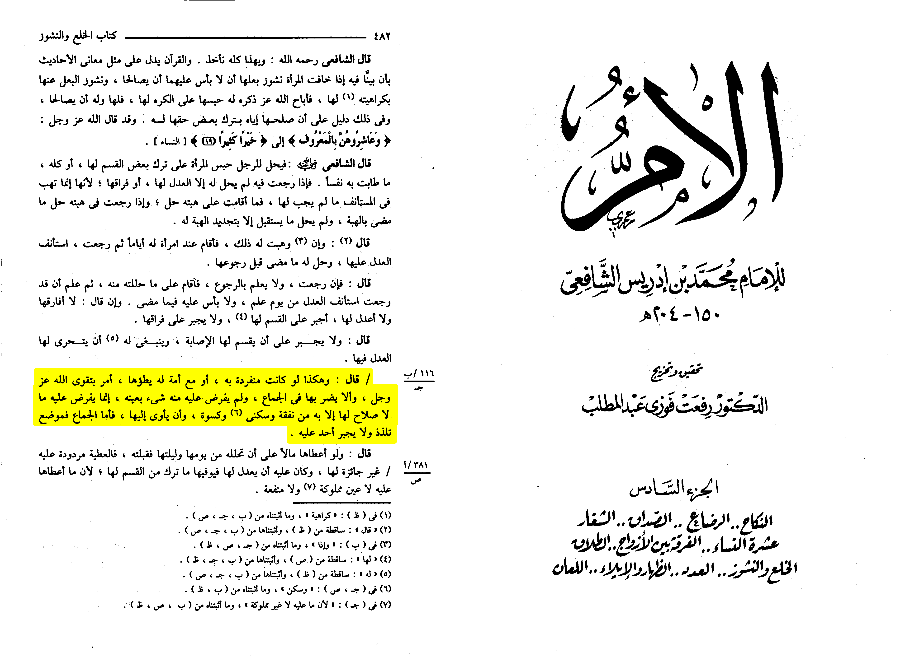

https://www.youtube.com/watch?v=bvR2F7SfpiI&ab_channel=%D8%AF.
%D9%87%D9%8A%D8%AB%D9%85%D8%B7%D9%84%D8%B9%D8%AADr.HaithamTalaat
No theology of rape in Islam by Abu Amina Elias
https://abuaminaelias.com/no-theology-of-rape-in-islam/
Marital rape and domestic violence in Islamic law by Abu Amina Elias
https://abuaminaelias.com/marital-rape-domestic-violence/
Does martial rape exist in Islam?
https://www.dar-alifta.org/Foreign/ViewFatwa.aspx?ID=6033
Does Islam Permit Muslim Men to Rape Their Slave Girls? by Bassam Zawadi
https://www.call-to-monotheism.com/does_islam_permit_muslim_men_to_rape_their_slave_girls_
Al-Shafi’i was asked questions about a man’s responsibility to spend time with his wife or wives, and specifically
whether he is required to have intercourse with her at regular intervals. He answered:
Likewise, if he has only one wife or an additional concubine with whom he has intercourse,
he is commanded to fear Allah Almighty and to not harm her in regards to intercourse,
although nothing specific is obligated upon him. He is only obligated to provide what benefits
her such as financial maintenance, residence, clothing, and spending the night with her. As for intercourse,
its position is one of pleasure and no one can be forced into it (la yujbaru ahadun ‘alayhi).

Source: al-Umm (6/482)
Salamah ibn al-Muhabbiq reported: A man had intercourse with the servant girl of his wife, so the matter
was referred to the Prophet, peace and blessings be upon him. The Prophet (ṣ) said:
If she had done so willingly, she belongs to him and he must pay the likes of her price.
If he had forced her, she is free and he must pay the likes of her price.
Source: Musnad Aḥmad 19556, Grade: Hasan
An insight in this tradition is that the man’s crime is compounded and his penalty more severe if he
had forced his wife’s slave into sexual intercourse. If the first evil deed is made worse by the
second deed, the second deed must be evil in itself. As such, forced intercourse by itself,
which is sexual assault, is an immoral action.
Ibn al-Qayyim commented on this tradition, writing:
As for if he had forced her, then this is a type of abuse as compulsion into
sexual intercourse is abuse. Indeed, such intercourse is carried out in the manner of a criminal offence,
so for this reason he is not absolved from a fine or legal punishment.
Source: I’lām al-Muwaqqi’īn 2/21
Major Shafi'i scholar al-Haleemi (d. 403) said when commenting on Q. 4:36 which speaks of
kindness to slaves:
"If she disliked being touched or intercourse, then he shouldn't touch her or have intercourse
with her without her permission."
al-Minhaj fi Shu'ab al-Iman 3/267
Does Islam permit Marital Rape?
There is a group of red pill men perpetuating this pernicious idea to all demographics and this notion
has become undeservingly pervasive amongst islams attackers.
This idea is no doubt internecine to islams image and its supposed treatment of women; so then, does
Islam permit marital rape?
——————————————————
Imam Shafi’i said
“Likewise, if he only has one wife or an additional servant with whom he has intercourse,
he is commanded to fear Allah Almighty and to not harm her in regards to intercourse,
although nothing specific is obligated upon him (ie in general with regards to intercourse
anything that may cause harm to her is stringently forbidden for him, so no specifics are mentioned).
He is only obligated to provide what benefits her such as financial maintenance, residence, clothing,
and spending the night with her. As for intercourse, it’s position is one of pleasure and no one can be
forced into it.”
(al-Umm 5/203)
——————————————————
Al-Nawawi states as a general principle
“If it is possible to have intercourse with her without harming her, he may do that.
If it is not possible for him to have intercourse with her except by harming her,
then he does not have permission to have intercourse with her.”
Al-Majmu3 Sharh al-Muhadhab 16/409
This general statement is particularly interesting and extends more to just having sex with her
without her consent
If having sex with her even consensually but you see that it is hurting her then it is forbidden for
you to have sex with her.
And of course no doubt that having sex against her lack of consent is clearly harming to her, so it is
of course forbidden to you in that regard
I simply wanted to evoke the idea that even if she consented and you having sex with her hurts her or
harms her or whatnot, it is still forbidden for you.
——————————————————
Al-Buhuti said
“A husband has the right to enjoy his wife no matter the circumstance as long as he does not distract
her from her religious obligations or harm her. He may not enjoy her in that case, since that is not living with them ‘honourably’ (4:19). If he does not distract her from her religious duties, and he does not harm her, then he may enjoy her.”
Kashaaf al Qinaa2 (5/188)
Of course, having sex with her against her lack of consent is clearly harming her, so it is NOT
permissible for him in light of that.
Surah An-Nisaa (The Women)
4:19
You who believe, it is not lawful for you to inherit women against their will, nor should you treat
your wives harshly, hoping to take back some of the bride-gift you gave them, unless they are guilty
of something clearly outrageous. Live with them in accordance with what is fair and kind: if you dislike
them, it may well be that you dislike something in which God has put much good.
Translation: Abdul Haleem | Medinan
This is Quranic evidence for the good treatment of your wives and objection to this idea of marital rape
being permitted.
not lawful for you to inherit women amongst their will nor .. is treating your wives harshly..
live with them in accordance to what is kind and fair and if you dislike them it may well be you dislike
something in which god has put much good.
Riyadh as-Salihīn
Husband's rights concerning his Wife
Abu Hurairah (May Allah be pleased with him) reported: Messenger of Allah (ﷺ) said, "When a man calls
his wife to his bed, and she does not respond and he (the husband) spends the night angry with her,
the angels curse her until morning". [Al-Bukhari and Muslim]. In another narration: The Messenger of
Allah (ﷺ) said, "When a woman spends the night away from the bed of her husband, the angels curse her
until morning". [Al-Bukhari and Muslim]. In another narration: Messenger of Allah (ﷺ) said,
"By Him in Whose Hand is my life, when a man calls his wife to his bed, and she does not respond,
the One Who is above the heaven becomes displeased with her until he (her husband) becomes pleased
with her". [Al-Bukhari and Muslim].
Reference: Riyadh as-Salihīn 281
This is taken heavily out of context. This Hadith is in reference to the women who weaponise sexual
relations with her husband as a means to an end, because she wants to harm him or get back at him,
as examples. Denying him sex for reasons external to Islamic validity falls under this weaponisation;
can she deny him because she’s tired? Yes. Because she’s ill? Yes. Etc.
Consider the scenario : you get into an argument with your wife, and she says oh you’re not getting
anything for the next 10 days; she is not allowed to do this.
This is weaponising sex as a means to get back at the husband.
Of course a woman is allowed to deny sex due to valid reasons, same with a husband. It is in both of
their rights that they should be able to enjoy each other unless they have valid reasons to refuse it.
For a woman to deny her husband without valid reason, as well as denying his rights, as well as
manipulating his patience for sexual intercourse (Fath Al Bari 9/206) for no reason, this is weaponising sex.
But as per the Quranic ayah ‘و عاشروهن بالمعروف' ie treating them and bestowing them and embracing
them with this intimate kindness and goodness and fairness and rectitude.. you cannot force yourself on her
and this is absolutely forbidden for you.
Ibn Hajar in his commentary of this Hadith explains
“As for the tradition on this topic, there is nothing in it but that the angels do that (cursing).
It does not necessitate for him permission in any respect.
Fath al Bari 4897
This still does not give him permission to go and have sex with her even if she refuses it for him out
of weaponisation - she is only cursed by the angels and he is still not allowed to have sex with her.
Such is the moral rectitude instilled in this relationship by Allah who has ordained it between a man
and a woman. May Allah obliterate those who pervade this harmful notion and who delude the attackers
of Islam giving them fuel for their hysterical fires.